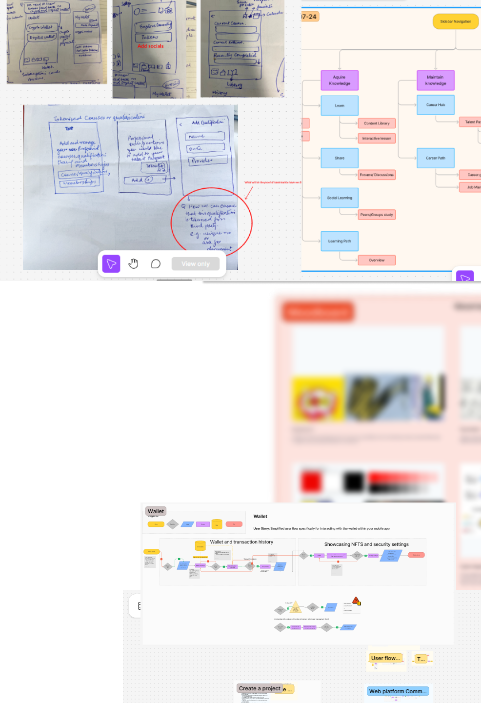

UX Designer
— Lillup
End-to-End Product Design

Introduction
At Lillup, I worked on end-to-end UX design for a mobile application and website, collaborating remotely with cross-functional team members through calls & Zoom meetings. I started in an internship capacity and transitioned into a UX Designer role, contributing across research, design, testing, and delivery phases.
Key Responsibilities & Contributions
- Conducted UX research and user interviews to understand user needs, pain points, and behavior patterns.
- Created moodboards to define visual direction and align stakeholders on product tone and style.
- Designed user flows covering the complete journey from login and onboarding to dashboards and core features.
- Produced sketches, low-fidelity wireframes, and high-fidelity screens for a mobile app.
- Developed interactive prototypes for usability testing and validation.
- Participated in usability testing, iterating designs based on user feedback and findings.
- Designed with accessibility in mind, selecting color palettes suitable for color-blind users and users with visual impairments.
- Collaborated closely with team members in daily remote meetings, contributing to design discussions and product decisions.
- Delivered initial concept screens as well as refined, production-ready designs.
Tools & Skills Used
UX Research, User Interviews, Information Architecture, User Flows, Wireframing, Prototyping, Usability Testing, Accessibility-aware Design, Figma, Sketching
A Glance at Work
Due to NDA restrictions, I share a mix of text and blurred copy to demonstrate my design process, not final production screens.